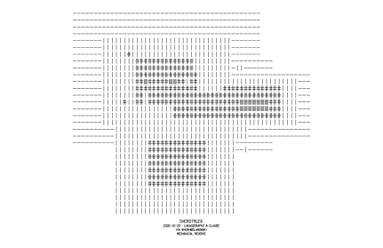

The piece taken off the screen and drawn by a pen. A faithful plot of the root, then studies that leave it behind — black and red ink on paper, where the overstrike becomes weave, weight, and the checker that later taught the engine.
The canonical Day-147 piece drawn as pen strokes — no decisions changed, only the medium. On paper the glyph ramp reads as a texture vocabulary rather than tone: dashes as ruling, hashes as a woven grey, solids as weight.

The moment a decision changes what is drawn, a plot stops being an export and becomes a study. Colour separation, solid fills, woven direction splits — none has a screen equivalent. The houndstooth weave is where the red/black checker first appeared.